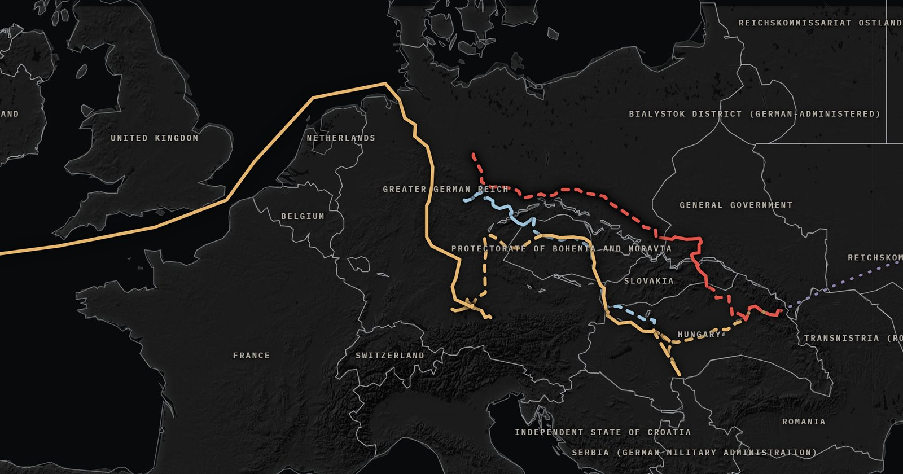
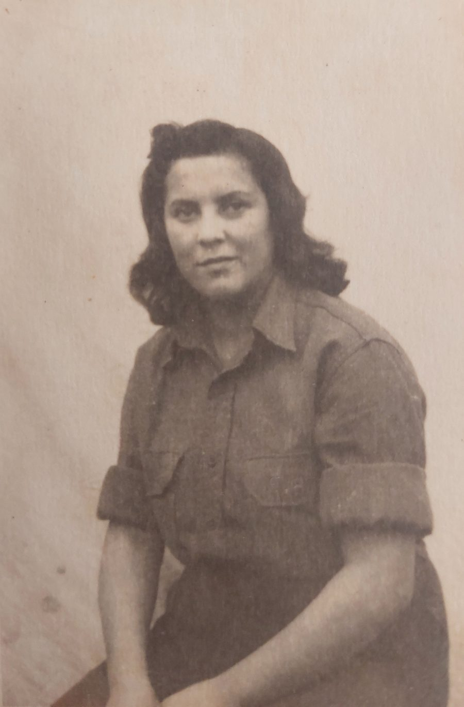
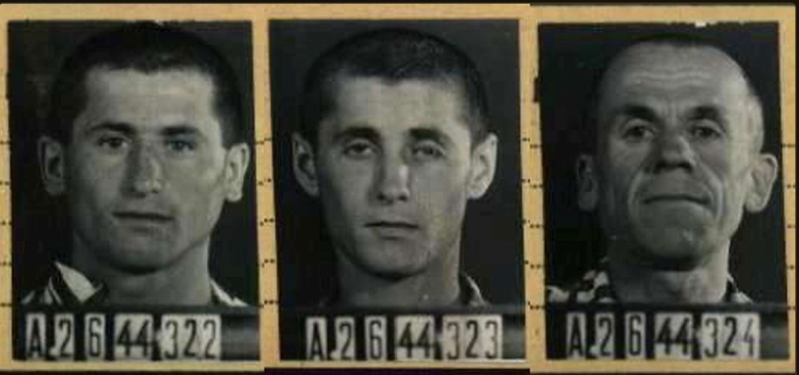
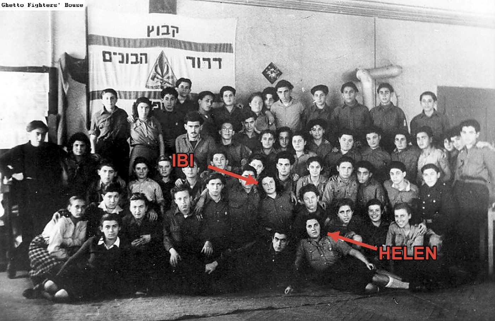
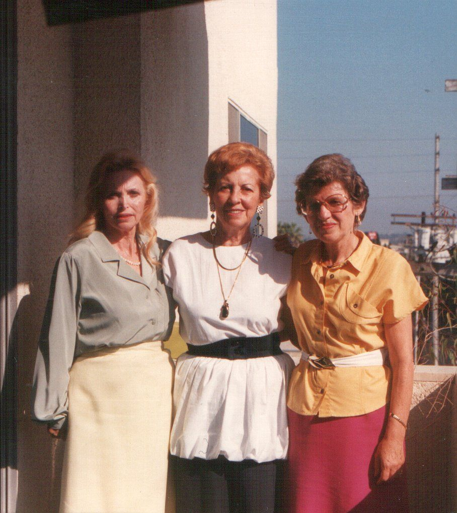

Tiszabogdány · Subcarpathia
Engineering Remembrance
I use the records made to destroy families to find them again.
My grandmother, Helen, was the sole survivor of her immediate family in the Holocaust. For decades we had nothing but stories, then one prisoner card that this year exponentially grew into a dossier of 300+ documents. This is how I reconnected with family lost for more than 80 years, and how you can look for yours.
This site uses her family as a case study. Everything here was found from home, online, by mail and through family, and every step can be repeated for another family.


Photo found · 2026after her death Helen’s Road · a mapped case study At 15, her letters home came back. No one was there. Hear it in her own voice ▶ Follow my grandmother’s roadFollow her road

2026Photo found
2026Photo found
2019
Tap or click a face for his record
Buchenwald intake, 2 June 1944: two brothers and their uncle, Helen’s father. All three were Helmans from Tiszabogdány, all three were carters, and they were photographed one after another. Their cards were then filed apart for more than eighty years. Here they are side by side again. In 2019 my mother found Zacharias’s card; in 2026 I found his nephews beside him. Arolsen Archives · prisoner cards 56906, 57103, 57101
Rare: most families find a prisoner card with no photograph, if they find one at all.
The map opens full screen. Press start to hear Helen’s voice, or watch without sound.
Helen, in brief
Helen Lando Helman was born in Tiszabogdány, a village in the Carpathians, in 1929. She was the sole survivor of her immediate family. In 1943 her mother took her to Budapest, and she lived through 1944 there, in the city’s dispersed ghetto of yellow-star houses and then hidden in a children’s safe house. Her mother, her father and five of her brothers and sisters were murdered in 1944. For decades there was nothing of them: no photograph, no grave, no dates.
In 2019 the Arolsen Archives put their records online, and my mother found one prisoner card: Helen’s father, Zacharias. The family assumed that was the end of it. The research began in 2026, and it has grown from there. None of it required travel. Follow her road on the map, or see the hints and mistakes it taught me.
What came back
From the archives, one record at a time.
1 card → 300+ documents
One prisoner card in 2019. Then hundreds more in 2026.




I find Holocaust families, and show you how to find yours.
One card in. A family out.
I work in process engineering, so this is how I see it. One record goes in. It passes through four steps. What comes out verified goes straight back in as the next search. What doesn’t hold up is set aside, and I keep a list of those too. That loop ran hundreds of times. Tap any box for real examples from Helen’s case.
Each box links to its examples on the method page. A set-aside lead can come back, or be crossed off once the sources show it’s someone else. “Set aside” links to my mistakes.
Read the methodThe four steps in detail, my hints, the walls I hit, my mistakes, and every database I used.Open the method →Why I do this
I do this research from Hawai‘i, about as far from Europe as you can get.
I speak only English. The records I work with are in Hungarian, Czech, German, Russian, Yiddish, Hebrew and more, so I use AI to help me read and translate them, and then I check what it tells me against the page. I was never trained in this. I work in process engineering, and I’m getting my master’s in chemical engineering at Stanford. Engineers take a finished thing apart to see how it was made. I do the same with a family: I reverse-engineer what happened from the records the system left behind. That’s why this is called Engineering Remembrance. I’m not a historian. If I can learn it, you can too.
My grandparents on my mother’s side both survived the Holocaust: Helen Lando Helman and Tibi Katz. When I was born, Helen retired and lived with us part of every week to help raise me. Helen was a super grandma: she was happiest with her grandchildren, and she was the kindest, best person I have ever met. I was the youngest, so when she stayed with us, she shared my room. I chose UCLA so I would never be far from them, and when Helen died, I moved in with Tibi and lived with him until he died. He was my favorite roommate. You would never have known what either of them had been through. Helen would tell anyone; that’s why she spoke at schools. Tibi didn’t talk about the war the way she did, but eventually he opened up to me.
The records made to erase them can find them.
The story does not end with them. Now it is our turn, the second and third generations, to carry it on.
Start with one name and one town. Write every form of the name. Then follow the four steps.
The guide is free, and so are most of the databases. I’m one person, and I can’t research every family for free, but I help where I can, and I hope you’ll try it yourself. For a research consultation, write to sgrajews@stanford.edu.
Philadelphia, World Federation of Jewish Holocaust Survivors and Descendants: Saturday 24 October, 10:40 am to 12:20 pm, workshop with Jude Richter (USHMM), “For Those Who Don’t Fully Know Their Parents’ Holocaust Histories”. Sunday 25 October, 3:30 to 5:15 pm, “Present and Connect”. Find me at my table both days.